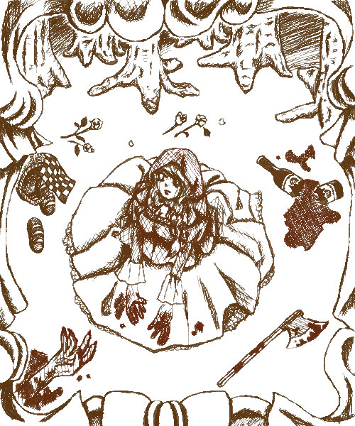

■「Little Bloody Riding Hood」■

作者：水琴
「これ下書き？」とか言われちゃいそうで怖いんですけど…銅版版画風にしてみたつもりです。
正直パソコンで描く意味がまったくない絵です。
だからあえてスキャナーで取り込んだ風のフィルターかけてみたり…
パソコン上で描いたように見えないように頑張ってみました。
どうしてもこれは描きたかったんで、誰かとかぶるの覚悟で「赤ずきんちゃん」です。
知ってる人は分かったかもしれませんが、SOPHIAの「Strawberry&Lion」のPVがモチーフです。
<< Close >>